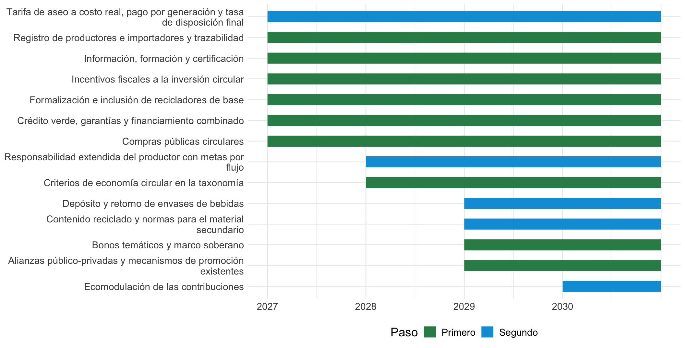

Contenido
- Diseño. Catorce instrumentos, dos pasos, 2027 a 2030.
- Montos. Lo que movilizan la REP, la tarifa y la tasa de obra.
- Actores, fuentes y reformas. Quién hace qué y con qué recursos.
- Seguimiento. Indicadores alineados con la Ley 502.
Diseño de instrumentos, actores, fuentes de financiamiento, reformas e indicadores
Consultor para la CEPAL

Año | Meta (%) | Toneladas | Mínimo (millones de US$) | Máximo (millones de US$) |
|---|---|---|---|---|
2028 | 10 | 75.683 | 42 | 55 |
2032 | 25 | 189.207 | 104 | 137 |
2037 | 45 | 340.573 | 187 | 246 |
Fuente | Origen | Tipo |
|---|---|---|
Contribuciones de los productores a sistemas de REP | Nacional | Privado |
Depósitos no reclamados y venta de material | Nacional | Privado |
Tasa de gestión integral de residuos y Fondo de Aseo | Nacional | Público |
Tasa de disposición final de residuos de obra | Nacional | Público |
Presupuesto General del Estado | Nacional | Público |
Gasto tributario | Nacional | Público |
Bonos soberanos temáticos | Nacional | Público |
Bonos temáticos corporativos en Latinex | Nacional | Privado |
Crédito bancario con garantía parcial | Nacional | Mixto |
Banco Interamericano de Desarrollo y BID Invest | Internacional | Multilateral |
Fondo Verde del Clima | Internacional | Concesional |
Cooperación técnica (CEPAL, GIZ y otras) | Internacional | Donación |
Nivel | Reforma | Emisor |
|---|---|---|
Ley | Ley de responsabilidad extendida del productor con metas por flujo, sistemas colectivos, sanciones y régimen del depósito obligatorio | Asamblea Nacional (iniciativa del Ejecutivo) |
Decreto ejecutivo | Reglamento de la Ley 502: registro de productores, plataforma de indicadores e instalación del Consejo Nacional de Economía Circular | Órgano Ejecutivo por medio de MiAMBIENTE |
Decreto ejecutivo | Reglamento de la Ley 276: gradualidad para recicladores, residuos de manejo especial y obligaciones de REP | Órgano Ejecutivo |
Decreto ejecutivo | Reglamento de los incentivos de la Ley 223 y del art. 52 de la Ley 276 | Órgano Ejecutivo por medio del MEF |
Decreto ejecutivo | Reglamento del art. 53 de la Ley 276 sobre compras de material reciclado nacional | Órgano Ejecutivo |
Resolución | Normas de REP por flujo y autorización de sistemas de gestión y de depósito | Junta Directiva de la AAUD |
Resolución | Pliego tarifario de la tasa de gestión integral a costo real, con consulta ciudadana | Junta Directiva de la AAUD |
Resolución | Fichas técnicas y pliegos con criterios de economía circular | DGCP |
Resolución | Normas técnicas de áridos reciclados y PET reciclado | MICI (DGNTI) |
Acuerdo de superintendencia | Segunda edición de la taxonomía y reporte de cartera alineada | SBP, SMV y SSRP |
Resolución | Ventana circular del Fondo de Garantías | MEF y fiduciario |
Acuerdo municipal | Tasas de aseo a costo real y separación obligatoria en municipios que prestan el servicio | Concejos municipales |
Indicador | Línea de base | Meta 2030 |
|---|---|---|
Productores e importadores inscritos en el registro | Sin registro | Todos los obligados de los flujos iniciales |
Recicladores de base registrados como gestores | 6.085 segregadores (registro de 2010) | Censo actualizado y registro abierto |
Valorización de envases bajo REP (%) | Sin medición | 25 % |
Tasa de retorno de envases con depósito (%) | Sin sistema | Sistema en operación |
Recaudación de la tasa de aseo sobre el costo del servicio (%) | 58 % (2025) | 100 % |
Cobertura de recolección (% del peso) | 64 % | Aumento sostenido |
Residuos de obra dispuestos en sitios autorizados (t) | Sin medición | Registro de toneladas |
Inversión acogida a incentivos de reciclaje (millones de B/.) | Sin reporte | Reporte anual del MEF |
Contratos públicos con criterios circulares (%) | Sin medición | Obra pública con criterios |
Cartera bancaria alineada al objetivo circular (millones de US$) | Sin criterios | Reporte anual de la SBP |
Emisiones temáticas con uso circular (millones de US$) | Un programa corporativo de reciclaje | Emisión soberana con categoría circular |
Crédito garantizado a negocios circulares (millones de US$) | Sin ventana | Ventana en operación |
Establecimientos turísticos con certificación de sostenibilidad | Sin programa nacional | Programa en operación |
Reporte trienal de indicadores de economía circular | Sin reporte | Primer reporte publicado |
Hoja de Ruta Nacional para el Financiamiento de la Economía Circular en Panamá